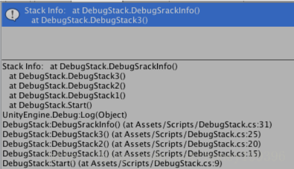
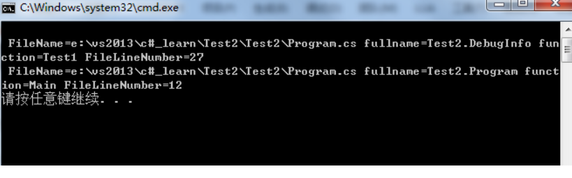

☰ 目录
20180717 打印当前堆栈信息
简单示例1：们可以通过断点调试查看堆栈信息，也可以直接输出调用的堆栈信息，
using System.Collections;
using System.Collections.Generic;
using UnityEngine;
public class DebugStack : MonoBehaviour {
// Use this for initialization
void Start () {
DebugStack1 ();
}
void DebugStack1()
{
DebugStack2 ();
}
void DebugStack2()
{
DebugStack3 ();
}
void DebugStack3()
{
DebugSrackInfo ();
}
void DebugSrackInfo()
{
string trackStr = new System.Diagnostics.StackTrace().ToString();
Debug.Log ("Stack Info:" + trackStr);
}
}
但是这种不能打印行号，还是不太好。如下：

为了显示行号， 可写一个简单的类：
using System;
using System.Diagnostics;
namespace Test2
{
class Program
{
static void Main(string[] args)
{
DebugInfo db = new DebugInfo();
Console.WriteLine(db.Test1());
}
}
class DebugInfo
{
public String Test1()
{
string info = null;
//设置为true，这样才能捕获到文件路径名和当前行数，当前行数为GetFrames代码的函数，也可以设置其他参数
StackTrace st = new StackTrace(true);
//得到当前的所以堆栈
StackFrame[] sf = st.GetFrames();
for (int i = 0; i < sf.Length; ++i)
{
info = info + "\r\n" + " FileName=" + sf[i].GetFileName() + " fullname=" + sf[i].GetMethod().DeclaringType.FullName + " function=" + sf[i].GetMethod().Name + " FileLineNumber=" + sf[i].GetFileLineNumber();
}
return info;
}
}
显示的效果如下：

需要注意的是，无论是Debug还是Release模式，new StackTrace(true)的时候设置为true，并且exe路径下存在pdb编译信息文件，这才可以显示当前路径文件名和行数。
实例如下：
写一个静态函数：
最底层的堆栈信息是该函数。
/// created by : xixie
/// 打印堆栈信息，可以打印行号
/// </summary>
public static string PrintStackInfo() {
string info = null;
//设置为true，这样才能捕获到文件路径名和当前行数，当前行数为GetFrames代码的函数，也可以设置其他参数
StackTrace st = new StackTrace(true);
//得到当前的所以堆栈
StackFrame[] sf = st.GetFrames();
for (int i = 0; i < sf.Length; ++i)
{
info = info + "\r\n" + " FileName=" + sf[i].GetFileName() + " fullname=" + sf[i].GetMethod().DeclaringType.Name/*FullName*/ + " function=" + sf[i].GetMethod().Name + " FileLineNumber=" + sf[i].GetFileLineNumber();
}
return info;
}
调用如下：
Debug.Log("UIChatVoiceButton OnPress() " + CommonFun.PrintStackInfo());
结果：
UIChatVoiceButton OnPress()
FileName=C:\Users\xixie\workshop_tmp\Client\UnityProj_clone\Assets\ShareWithDS\Scripts\Utility\CommonFun.cs fullname=CommonFun function=PrintStackInfo FileLineNumber=10218
FileName=C:\Users\xixie\workshop_tmp\Client\UnityProj_clone\Assets\Scripts\UI\UIChat\UIChatVoiceButton.cs fullname=UIChatVoiceButton function=OnPress FileLineNumber=43
FileName= fullname=GameObject function=SendMessage FileLineNumber=0
FileName=C:\Users\xixie\workshop_tmp\Client\UnityProj_clone\Assets\Plugins\NGUI\Scripts\UI\UICamera.cs fullname=UICamera function=Notify FileLineNumber=1593
FileName=C:\Users\xixie\workshop_tmp\Client\UnityProj_clone\Assets\Plugins\NGUI\Scripts\UI\UICamera.cs fullname=UICamera function=ProcessRelease FileLineNumber=2524
FileName=C:\Users\xixie\workshop_tmp\Client\UnityProj_clone\Assets\Plugins\NGUI\Scripts\UI\UICamera.cs fullname=UICamera function=ProcessTouch FileLineNumber=2642
FileName=C:\Users\xixie\workshop_tmp\Client\UnityProj_clone\Assets\Plugins\NGUI\Scripts\UI\UICamera.cs fullname=UICamera function=ProcessMouse FileLineNumber=2012
FileName=C:\Users\xixie\workshop_tmp\Client\UnityProj_clone\Assets\Plugins\NGUI\Scripts\UI\UICamera.cs fullname=UICamera function=ProcessTouches FileLineNumber=2152
FileName=C:\Users\xixie\workshop_tmp\Client\UnityProj_clone\Assets\Plugins\NGUI\Scripts\UI\UICamera.cs fullname=UICamera function=Update FileLineNumber=1794
但是在手机等应用中会显示无st.GetFrames(); 方法。在 C#5.0 中使用如下新方法。
public static void WriteError(object message,
[CallerMemberName] string memberName = "",
[CallerFilePath] string sourceFilePath = "",
[CallerLineNumber] int sourceLineNumber = 0)
{
//_log4Net.ErrorFormat("文件:{0} 行号:{1} 方法名:{2},消息:{3}", sourceFilePath, sourceLineNumber, memberName, message);
Logger.Log(string.Format("Fine:{0} LineNumber:{1} Method:{2}, Message:{3}", sourceFilePath, sourceLineNumber, memberName, message));
}
通用版本：
public static void DebugStackInfor(string message) {
string trackStr = new System.Diagnostics.StackTrace().ToString();
Logger.LogWarning("message: "+ message + "StackInfo: " + trackStr);
}
使用：
CommonFun.DebugStackInfor("UIChatVoiceButton OnPress()");